# Load packages
library(tidyverse)
library(cannonball) # for generating clustered data
library(lme4) # fitting multilevel models
library(lmerTest) # for p-values in multilevel models
# Generate clustered data; set seed for reproducibility
RNGversion("3.5.3")
set.seed(2019-10-28, kind = "Mersenne-Twister")
d_example <- clustered_data(
n_per_class = sample(15:25, size = 14, replace = TRUE),
ICC = 0.15, effect = 0.2,
reliability_post = 1, reliability_pre = 0.7^2)Adjusting for a covariate in cluster-randomised experiments
R
power
significance
simplicity
mixed-effects models
cluster-randomised experiments
Cluster-randomised experiments are experiments in which groups of participants (e.g., classes) are assigned randomly but in their entirety to the experiments’ conditions. Crucially, the fact that entire groups of participants were randomly assigned to conditions - rather than each participant individually - should be taken into account in the analysis, as outlined in a previous blog post. In this blog post, I use simulations to explore the strengths and weaknesses of different ways of analysing cluster-randomised experiments when a covariate (e.g., a pretest score) is available.
tl;dr
Cluster-randomised experiments in applied linguistics typically involve a fairly small number of clusters that are randomly assigned to conditions (e.g., perhaps 10 to 20 classes at best). The sizes of these clusters tend to be fairly similar (e.g., perhaps 15 to 25 pupils per class). The simulations indicate that cluster-randomised experiments with these characteristics are best analysed in a surprisingly simple way: Compute the mean outcome per cluster and run the analysis on the cluster means. If a covariate (e.g., pretest scores) is available, also compute the mean covariate value per cluster and add it to the analysis on the cluster means as a control variable.
Five different analytical approaches
I’ll compare the strengths and weaknesses of five methods for analysing cluster-randomised experiments in which a covariate (e.g., pretest scores) are available. I’ll first create some data whose properties reflect those found in cluster-randomised experiments and then run the five analyses. If you have R, you can follow along with the commands below.
The tidyverse, lme4 and lmerTest packages can be installed using install.packages(c("tidyverse", "lme4", "lmerTest")). For the cannonball package, see the installation instructions.
You can consult the help page for the clustered_data() command (type ?clustered_data at the R prompt) for more information about these settings; here’s the summary:
The dataset
d_examplenow contains simulated data from 14 classes with between 15 and 25 pupils each (n_per_class).Before factoring in an effect of the intervention, the variance between the classes is 15% of the total variance of the outcome (
ICC; intra-class correlation). Theclustered_data()function generates outcome data that is normally distributed within classes with variance = 1, so the variance between the classes is 0.18. (\(\textrm{ICC} = 0.15 = \frac{\textrm{variance between}}{\textrm{variance between} + \textrm{variance within (= 1)}} \leftrightarrow \textrm{variance between} = \frac{0.15}{1-0.15} \approx 0.18\)) ICCs in the 0.15–0.20 bracket are fairly typical in educational settings (Hedges & Hedberg 2007; Schochet 2008).The simulated intervention
effectwas 0.2, meaning that 0.2 points were added to the outcome values for the pupils in the intervention classes.The
reliability_postandreliability_preparameters are useful for generating pretest data that are correlated with each other. By settingreliability_post = 1andreliability_pre = 0.7^2, pretest scores are generated that are correlated at \(\rho = 0.7\) with the outcome.
Figures 1 and 2 show what the simulated data look like.
ggplot(data = d_example,
aes(x = reorder(class, outcome, median),
y = outcome)) +
geom_boxplot(outlier.shape = NA) +
geom_point(shape = 1,
position = position_jitter(width = 0.2)) +
xlab("class") +
facet_wrap(~ condition, scales = "free_x")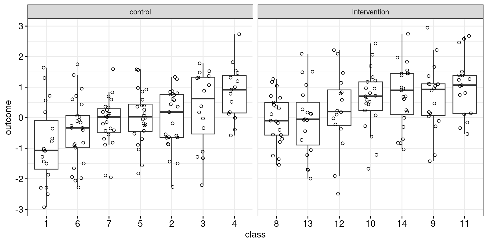
ggplot(data = d_example,
aes(x = pretest,
y = outcome,
linetype = condition,
colour = condition)) +
geom_point(shape = 1) +
geom_smooth(method = "lm", se = FALSE, formula = 'y~x')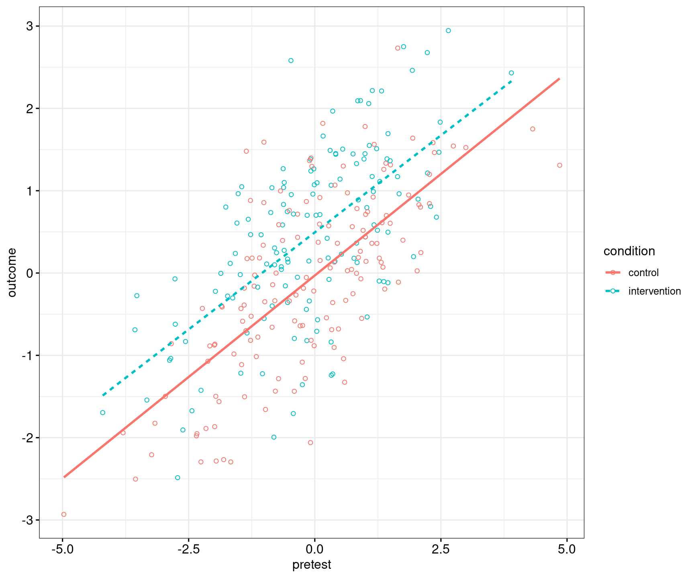
Let’s now analyse these data using five different approaches.
Approach 1: Analyse the cluster means, ignore the covariate
In the first approach, the covariate is ignored entirely. The dependencies in the data (pupils in classes) are taken into account by computing the mean outcome per class; the class means are entirely independent of each other.
d_per_class <- d_example |>
group_by(class, condition) |>
summarise(mean_class = mean(outcome),
.groups = "drop")Figure 3 shows what this looks like.
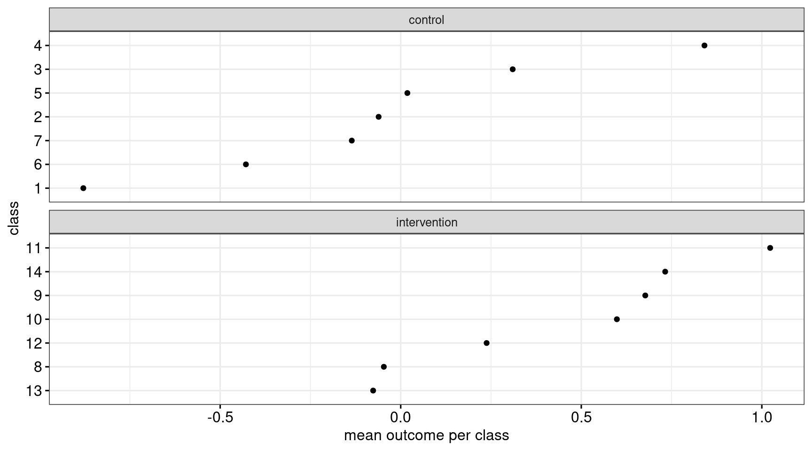
Then, these class means are compared, for instance by means of a two-sample t-test. This is identical to fitting a linear model with the class means as the outcome and the condition to which the class was assigned as the predictor:
m1 <- lm(mean_class ~ condition, data = d_per_class)
summary(m1)
Call:
lm(formula = mean_class ~ condition, data = d_per_class)
Residuals:
Min 1Q Median 3Q Max
-0.8311 -0.3386 0.0264 0.2692 0.8889
Coefficients:
Estimate Std. Error t value Pr(>|t|)
(Intercept) -0.0478 0.1831 -0.26 0.798
conditionintervention 0.4973 0.2590 1.92 0.079
Residual standard error: 0.485 on 12 degrees of freedom
Multiple R-squared: 0.235, Adjusted R-squared: 0.171
F-statistic: 3.69 on 1 and 12 DF, p-value: 0.0789The estimated intervention effect in this example is 0.50 ± 0.26, and the result of the significance test is t(12) = 1.92, p = 0.08. (You find the degrees of freedom for the t-test on the third line from the bottom.)
Some researchers may object that this approach reduces the original data set of 280 observations to just the 14 class means and hence throws away vital information. Having reached a certain age, I’ll quote myself on this topic:
“[R]esearchers may find it psychologically difficult to reduce a dataset to a fraction of its original size—if the analysis is carried out on ten cluster means, by bother recruiting several participants per cluster? However, larger clusters reduce the variance of the cluster means within each treatment group, which in turn makes the intervention effect stand out more clearly (Barcikowski, 1981). Put differently, cluster-level analyses are more powerful when the clusters are large compared to when they are small. That said, when given the choice between running an experiment on ten clusters with 50 observations each or on 50 clusters with ten observations each, the latter is vastly preferred due to its higher power (…).” (Vanhove 2015:145).
The assumptions of this analysis are the same as for any general linear model, it’s just that they now concern the class means rather than the raw observations. Independence can be assumed if the experimental protocol was followed. Normality isn’t too important but seems reasonable given that we’re working with aggregated data. But homoskedasticity (i.e., equal variances) may occasionally be a problem: The variance of any given class mean will be inversely proportional to the size of the class, meaning that small classes will tend to have more extreme means. In this case, the classes are all of similar sizes, as is typical in experiments with school classes, so this shouldn’t pose too great a threat to the results. In the simulations below, I’ll also consider experiments with wildly differing class sizes.
Approach 2: Fit a multilevel model, ignore the covariate
In the second approach, too, the covariate is ignored completely. Instead of analysing the cluster means, the individual observations are analyses. The clustering is taken into account by fitting the class effects by means of random effects. Different methods for computing p-values for multilevel (or mixed-effects) models exist. In the output below as well as in the simulations, Satterthwaite’s method was used as it isn’t prohibitively expensive computationally and as it performs well on balanced data; see Luke (2017). If you load the lmerTest package, p-values computed using Satterthwaite degrees of freedom are added to the lmer() output.
m2 <- lmer(outcome ~ condition + (1|class), data = d_example)
summary(m2)Linear mixed model fit by REML. t-tests use Satterthwaite's method [
lmerModLmerTest]
Formula: outcome ~ condition + (1 | class)
Data: d_example
REML criterion at convergence: 833
Scaled residuals:
Min 1Q Median 3Q Max
-2.6984 -0.5908 0.0535 0.6678 2.2562
Random effects:
Groups Name Variance Std.Dev.
class (Intercept) 0.169 0.411
Residual 1.064 1.031
Number of obs: 280, groups: class, 14
Fixed effects:
Estimate Std. Error df t value Pr(>|t|)
(Intercept) -0.0614 0.1781 11.2342 -0.34 0.737
conditionintervention 0.5100 0.2527 11.4011 2.02 0.068
Correlation of Fixed Effects:
(Intr)
cndtnntrvnt -0.705The estimated intervention effect in this example is 0.51 ± 0.25, and the result of the significance test is t(11.4) = 2.02, p = 0.07. This is slightly different from but highly similar to the results for Approach 1. Both approaches will yield identical results if all clusters have the same size, so keep things simple if this is the case for your data (also see Murtaugh 2007).
A possible advantage of this approach compared to Approach 1 is that it may be better able to cope with differences in class sizes. Disadvantages of Approach 2 are that the multilevel models may occasionally throw warnings and that it requires a certain number of clusters to be useful. Gelman and Hill (2007:247) point out that with fewer than five clusters, multilevel models will typically not be able to estimate the between-cluster variance. In fact, Hayes and Moulton (2009:223) suggest that multilevel modelling be used only from about 15 clusters per condition onwards.
Approach 3: Residualise the outcome against the covariate and analyse the cluster mean residuals
The approach recommended by Hayes and Moulton (2009) for taking covariates into account in analyses of cluster-randomised designs is to first fit a model in which the outcome is regressed against the covariate. This model does not take the condition nor the clustering into account. The model residuals are then extracted:
covariate_model <- lm(outcome ~ pretest, data = d_example)
d_example$residual <- resid(covariate_model)In the next step, the residuals from this model are averaged per class:
d_per_class <- d_example |>
group_by(class, condition) |>
summarise(mean_residual = mean(residual),
.groups = "drop")Figure 4 shows what this looks like.
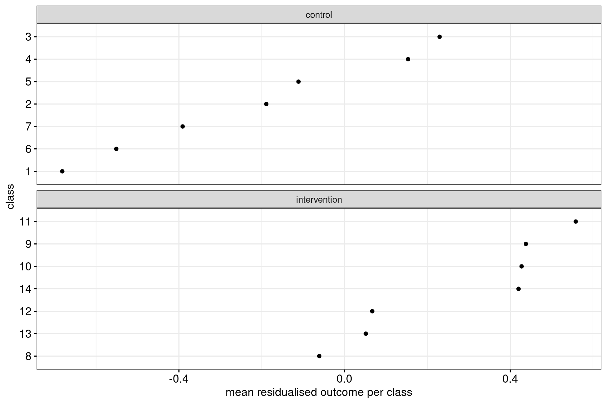
Then, similarly to Approach 1, these class means are analysed, e.g., in a general linear model:
m3 <- lm(mean_residual ~ condition, data = d_per_class)
summary(m3)
Call:
lm(formula = mean_residual ~ condition, data = d_per_class)
Residuals:
Min 1Q Median 3Q Max
-0.4615 -0.2164 0.0701 0.1637 0.4497
Coefficients:
Estimate Std. Error t value Pr(>|t|)
(Intercept) -0.220 0.113 -1.96 0.0740
conditionintervention 0.492 0.159 3.09 0.0094
Residual standard error: 0.298 on 12 degrees of freedom
Multiple R-squared: 0.443, Adjusted R-squared: 0.397
F-statistic: 9.55 on 1 and 12 DF, p-value: 0.00936The estimated intervention effect in this example is 0.49 ± 0.16, and the result of the significance test is t(12) = 3.09, p = 0.009. Note how in this example, the standard error for the intervention effect estimate is considerably reduced compared to the two approaches that ignore the covariate.
Approach 4: Analyse the cluster means, adjust for the cluster mean covariate values
In the fourth approach, both the outcome and the covariate are averaged per class, and the class mean covariates are entered into the general linear model on the class mean outcomes as a covariate:
d_per_class <- d_example |>
group_by(class, condition) |>
summarise(mean_class = mean(outcome),
mean_pretest = mean(pretest),
.groups = "drop")Figure 5 shows the data that are submitted to the statistical analysis.
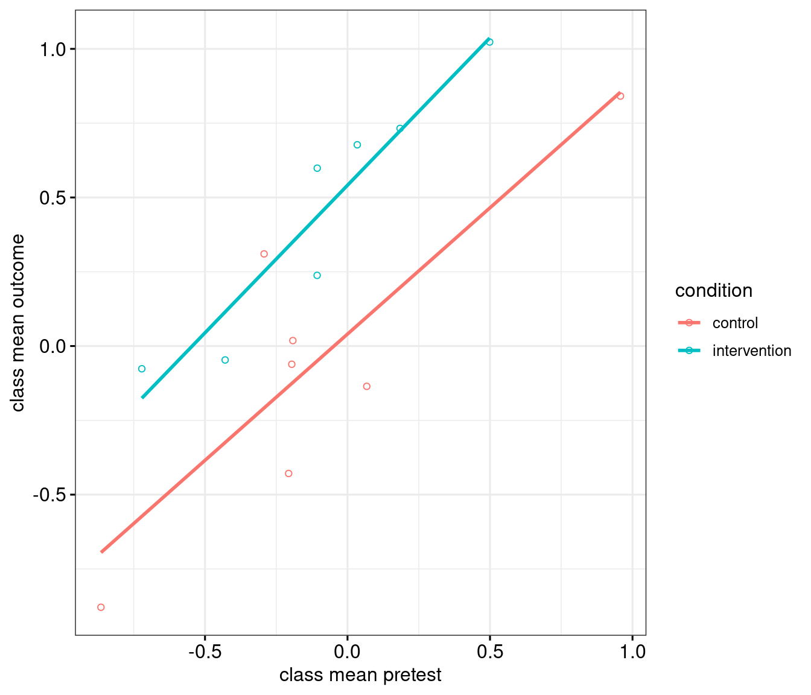
m4 <- lm(mean_class ~ condition + mean_pretest, data = d_per_class)
summary(m4)
Call:
lm(formula = mean_class ~ condition + mean_pretest, data = d_per_class)
Residuals:
Min 1Q Median 3Q Max
-0.2885 -0.1814 0.0371 0.1027 0.5279
Coefficients:
Estimate Std. Error t value Pr(>|t|)
(Intercept) 0.0455 0.0889 0.51 0.6188
conditionintervention 0.4870 0.1241 3.93 0.0024
mean_pretest 0.8994 0.1399 6.43 4.9e-05
Residual standard error: 0.232 on 11 degrees of freedom
Multiple R-squared: 0.839, Adjusted R-squared: 0.81
F-statistic: 28.7 on 2 and 11 DF, p-value: 4.32e-05The estimated intervention effect in this example is 0.49 ± 0.12, and the result of the significance test is t(11) = 3.93, p = 0.0024. Note how in this example, too, the standard error is considerably lower than in the two approaches that ignore the covariate.
Incidentally, the pretest effect that is reported in the output is entirely uninteresting: we included it in the analysis to reduce the residual variance, not because we have a research question concerning the pretest covariate.
This approach may be particularly useful compared to the other approaches if some standardised measure of the pupils’ pre-intervention performance or general skill level is available but if teachers, parents or administrators are unwilling to share the individual results: You could try asking for just the average score per class instead, as this is all you need!
Approach 5: Fit a multilevel model, include the covariate
Finally, you could fit a multilevel model as in Approach 2, but with the covariate included.
m5 <- lmer(outcome ~ condition + pretest + (1|class), data = d_example)
summary(m5)Linear mixed model fit by REML. t-tests use Satterthwaite's method [
lmerModLmerTest]
Formula: outcome ~ condition + pretest + (1 | class)
Data: d_example
REML criterion at convergence: 680
Scaled residuals:
Min 1Q Median 3Q Max
-2.5381 -0.6974 0.0239 0.6771 2.7744
Random effects:
Groups Name Variance Std.Dev.
class (Intercept) 0.0577 0.240
Residual 0.6143 0.784
Number of obs: 280, groups: class, 14
Fixed effects:
Estimate Std. Error df t value Pr(>|t|)
(Intercept) -0.0131 0.1122 10.8640 -0.12 0.9095
conditionintervention 0.5054 0.1594 11.0897 3.17 0.0088
pretest 0.4628 0.0317 275.3617 14.62 <2e-16
Correlation of Fixed Effects:
(Intr) cndtnn
cndtnntrvnt -0.703
pretest 0.033 -0.004The estimated intervention effect in this example is 0.51 ± 0.16, and the result of the significance test is t(11.1) = 3.17, p = 0.009. Again the pretest effect is entirely uninteresting; just include it in the analysis but otherwise ignore it.
So we have at least five ways of analysing data from cluster-randomised experiments when a covariate is available. Trying out several of them and then reporting the one that fits the narrative best is an excellent way of invalidating the inferential results, however, so I ran a simulation to find out which approach I should recommend to students and colleagues.
Set-up for the simulations
While it stands to reason that an optimal analysis will take into account the participants’ pretest (or other covariate) scores, I have found no guidance on which approach works best. Quite possibly, different approaches work best in different circumstances, so I wrote a couple of simulations to get a handle on this.
For the simulation I made use of the clustered_data() function in the cannonball package. See the help page for details about this function (?clustered_data). The following parameters were varied:
The number of participants either varied fairly little per class or varied a lot. For the simulations in which the class sizes were similar, the number of participants varied between 15 and 25 per class, which reflects typical school class sizes, and they were 14 classes in total. The homoskedasticity assumption is approximately met in these cases. For the simulations in which the class sizes differed more wildly, they were 10 classes, and the number of ‘pupils’ in these classes was 2, 4, 8, …, 1024. These clearly are untypical sizes for school classes, and the different class sizes induce substantial heteroskedasticity.
The (unconditional) intra-class correlation was either 0.17 or 0.03. An intra-class correlation of 0.17 is typical of cluster-randomised experiments in educational settings (Hedges & Hedberg 2007; Schochet 2008); an intra-class correlation of 0.03 is considerably lower than that but still enough to inflate Type-I errors considerably when it isn’t taken into account.
A covariate was available that was either pretty strongly correlated to the pupils’ pre-intervention outcome (\(\rho = 0.7\)) or fairly weakly correlated to it (\(\rho = 0.3\)). The strong covariate may be thought of as a pretest score; the weak covariate could be a weak proxy of pre-intervention performance (perhaps some self-assessment).
To check the Type-I error rate, the effect of the intervention was set to 0. To check the different methods’ power, the effect of the intervention was set to 0.4.
For each combination of parameters, 10,000 datasets were generated and analysed using each of the five approaches outlined above. For the simulation code and the raw results, see the bottom of this page.
Scenario 1: Typical cluster sizes, typical intra-class correlation
Let’s first take a look at how the analytical approaches compare in a typical cluster-randomised experiment in applied linguistics: The class sizes aren’t identical but fairly similar, and the intra-class correlation is 0.17.
When there is no effect of the intervention, we should observe a significant difference in only 5% of cases. In other words, the Type-I error rate should be 0.05. As Figure 6 shows, all five analytical approaches seem to have the advertised Type-I error rate of 0.05.
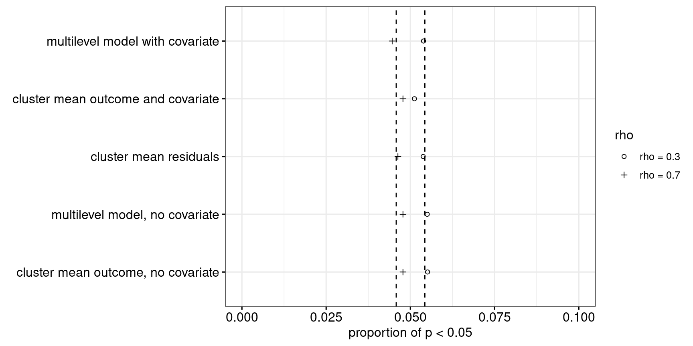
When there is an effect of the intervention, we should observe significant differences more often. As Figure 7 shows, Approach 4 performs either on par with or considerably better than the alternative approaches.
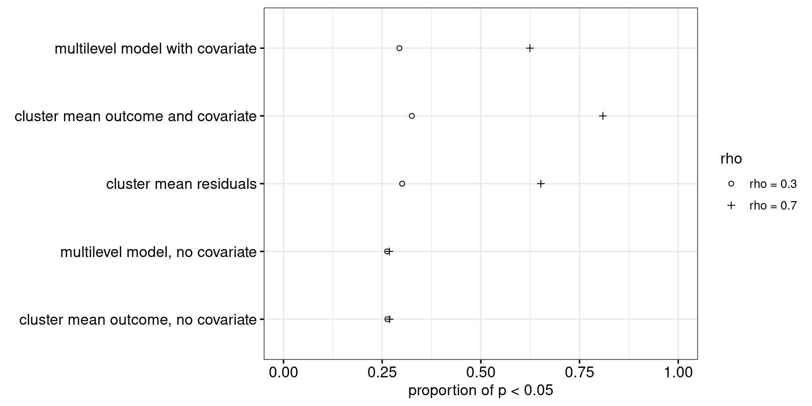
In summary, for what I consider to be a typical cluster-randomised experiment in applied linguistics, Approach 4 seems to be the best way to analyse the data.
Scenario 2: Typical cluster sizes, low intra-class correlation
In scenario 2, the class sizes are still typical of what is found in applied linguistics, but the intra-class correlation is lower (0.03). As Figure 8 shows, Approach 5 (multilevel model with covariate) may be somewhat too conservative if the intra-correlation is low and the covariate is fairly strongly related to the outcome. In spite of this conservatism, it performs well power-wise, as shown in Figure 9.
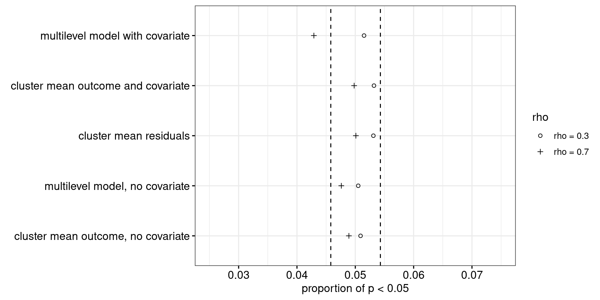
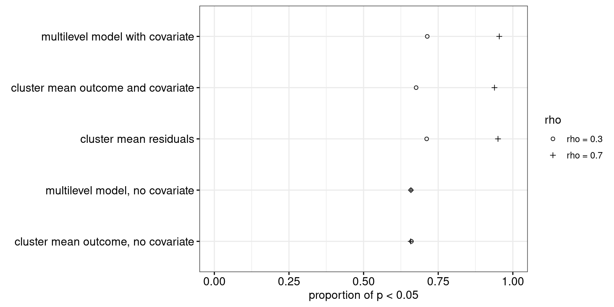
Scenario 3: Wildly different cluster sizes, typical intra-class correlation
Now let’s consider a more unrealistic scenario. The ICC is 0.17, as in scenario 1, but the classes aren’t all of approximately equal size, but instead we have one class of size 2, one class of size 4, up till one class of size 1024 (\(2^1, 2^2, 2^3, \dots, 2^{10}\)). As Figures 10 and 11 show, Approach 4 may be slightly too conservative in terms of its Type-I error rate in this setting, yet performs best power-wise.
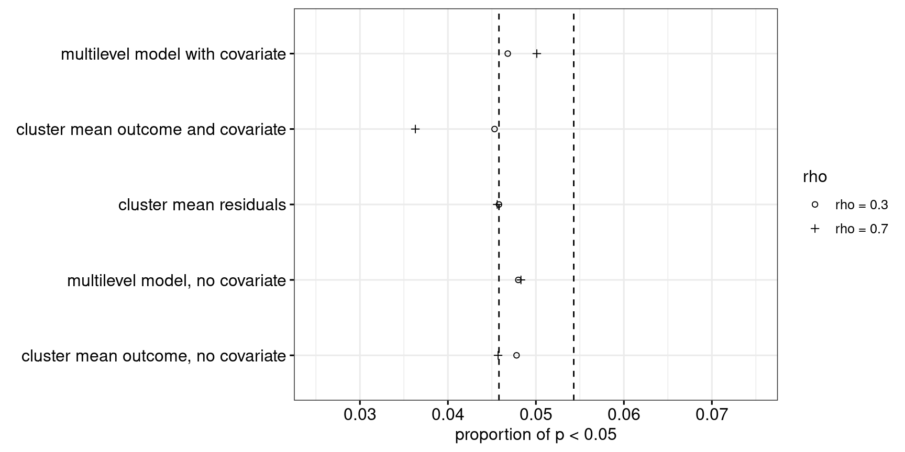
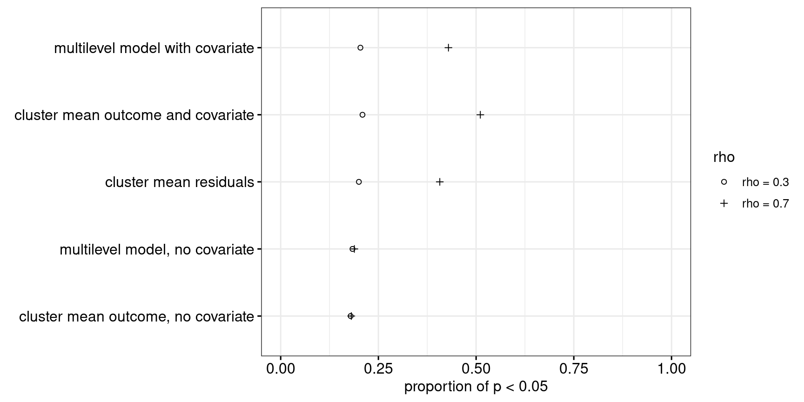
Scenario 4: Wildly different cluster sizes, low intra-class correlation
In the fourth scenario, the cluster sizes again differ wildly, but the ICC is only 0.03. As Figure 12 shows, the cluster-level analyses are all too conservative, whereas the multilevel approaches aren’t conservative enough. The observed power associated with each approach was correspondingly adjusted, see Figure 13. Even with its power properly adjusted, the multilevel model with a covariate (Approach 5) outperforms the other approaches when the correlation between outcome and covariate is fairly strong.
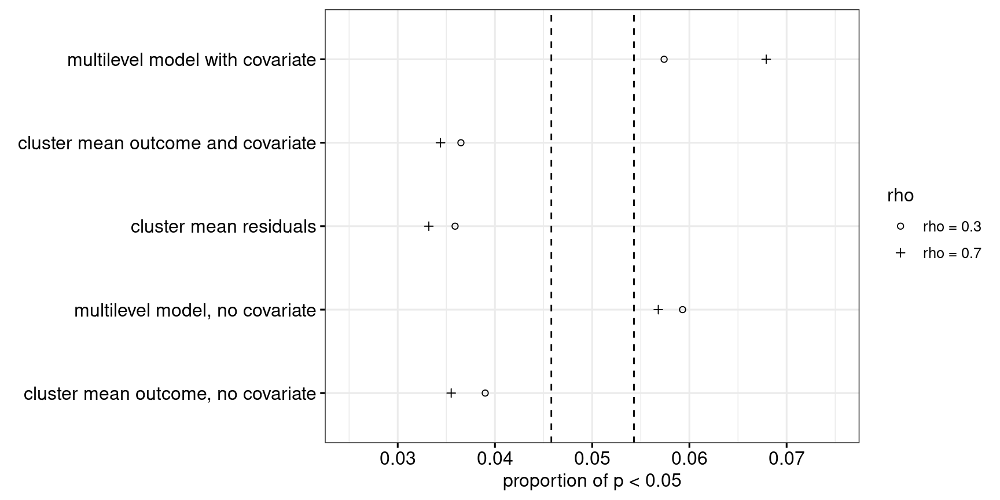
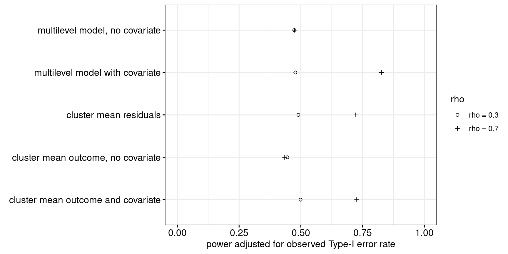
Summary
In sum, for typical cluster-randomised experiments in applied linguistics (as simulated in scenarios 1 and perhaps 2), Approach 4 either considerably outperforms the other approaches or performs about equally well. Multilevel models only seem to have some added value when the cluster sizes are wildly different, the intra-class correlation is pretty low and the covariate is strongly related to the outcome. On balance, therefore, I think that it is reasonably for me to recommend students and colleagues to analyse cluster-randomised experiments using Approach 4.
(Incidentally, if someone could explain to me why Approach 4 outperforms Approaches 3 and 5 in Scenario 1, that would be highly appreciated.)
One strategy I definitely do not recommend is to try out several different approaches and then report the one that returns the lowest p-value. As Figure 14 shows, different analyses ran on the same data can produce very different p-values. If you try out two or more approaches and always report the lowest p-value, your Type-I error rate will blow up (see Simmons et al. 2011).
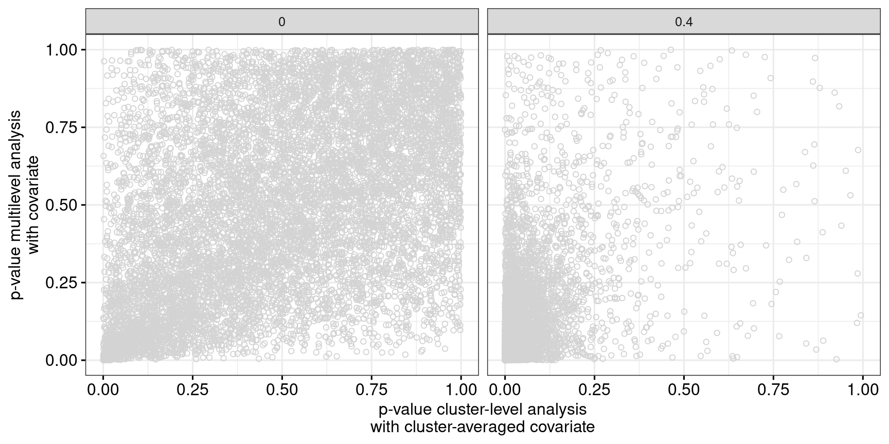
How about fewer clusters?
In scenarios 1 and 2, fourteen classes participated in the experiment. I’ve rarely seen cluster-randomised experiments in applied linguistics with more than 20 classes, but cluster-randomised experiments with just a handful of classes (say 4 or 6) do occur. (Unfortunately, cluster-randomised experiments with just two classes also occur. But these can’t be analysed properly.) I therefore ran some additional simulations for experiments in which only 6 classes with between 15 and 25 pupils participated, with an ICC of 0.17, and in which the covariate was fairly strong, as would be typical in experiments with pretests.
As Figure 15 shows, all approaches perform well in terms of their Type-I error rate. Power-wise, Figure 16 shows that Approach 4 pips Approaches 3 and 5, which in turn perform much better than Approaches 1 and 2. The default recommendation to use Approach 4 therefore also seems reasonable for cluster-randomised experiments with few clusters.
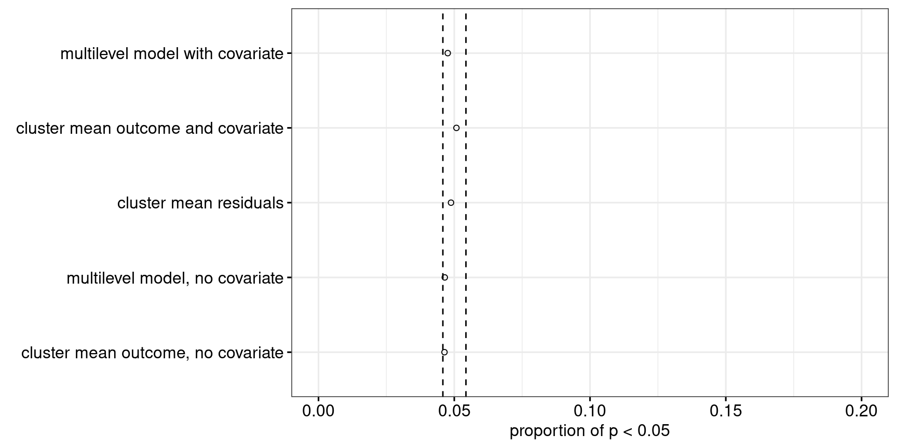
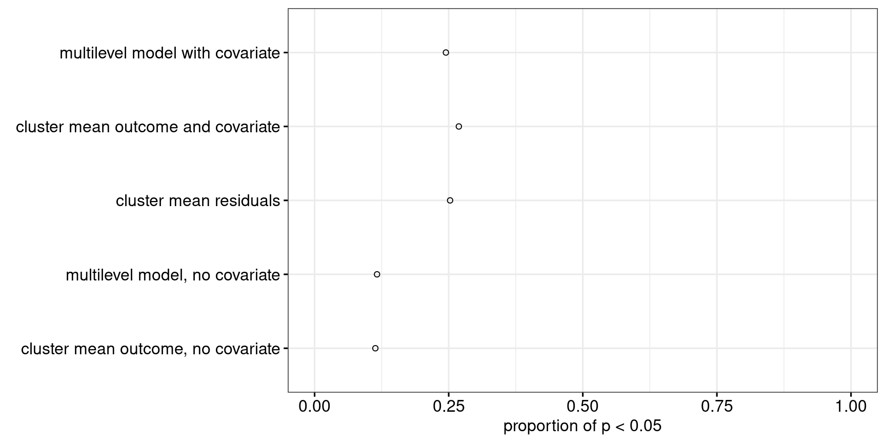
R code and simulation results
The R code for the simulations is available here. The simulation output for scenarios 1 through 4 is available here (84.5 MB). The simulation output for experiments with only 6 classes is available here (11 MB). In the output, each row corresponds to one simulated dataset that was analysed in five different ways. Columns 1 through 5 contain the p-values associated with each analysis, columns 6 through 10 contain the estimates for the intervention effect that each analysis yields, columns 11 through 15 contain the corresponding standard errors, columns 16 through 25 contain the lower and upper bounds of the 95% confidence intervals, and the last four columns specify the simulation parameters.
References
Gelman, Andrew and Jennifer Hill. 2007. Data analysis using regression and multilevel/hierarchical models. Cambridge, UK: Cambridge University Press.
Hayes, Richard J. and Lawrence H. Moulton. 2009. Cluster randomised trials. Boca Raton, FL: Chapman & Hall/CRC.
Hedges, Larry V. and E. C. Hedberg. 2007. Intraclass correlation values for planning- group-randomized trials in education. Educational Evaluation and Policy Analysis 29(1). 60-87.
Luke, Steven G. 2017. Evaluating significance in linear mixed-effects models in R. Behavioral Research Methods 49. 1494–1502.
Murtaugh, Paul A. 2007. Simplicity and complexity in ecological data analysis. Ecology 88(1). 56–62.
Schochet, Peter Z. 2008. Statistical power for random assignment evaluations of education programs. Journal of Educational and Behavioral Statistics 33(1). 62-87.
Simmons, Joseph P., Leif D. Nelson and Uri Simonsohn. 2011. False-positive psychology: Undisclosed flexibility in data collection and analysis allows presenting anything as significant. Psychological Science 22(11). 1359-1366.
Vanhove, Jan. 2015. Analyzing randomized controlled interventions: Three notes for applied linguists. Studies in Second Language Learning and Teaching 5. 135–152. Also see the correction note for this paper.